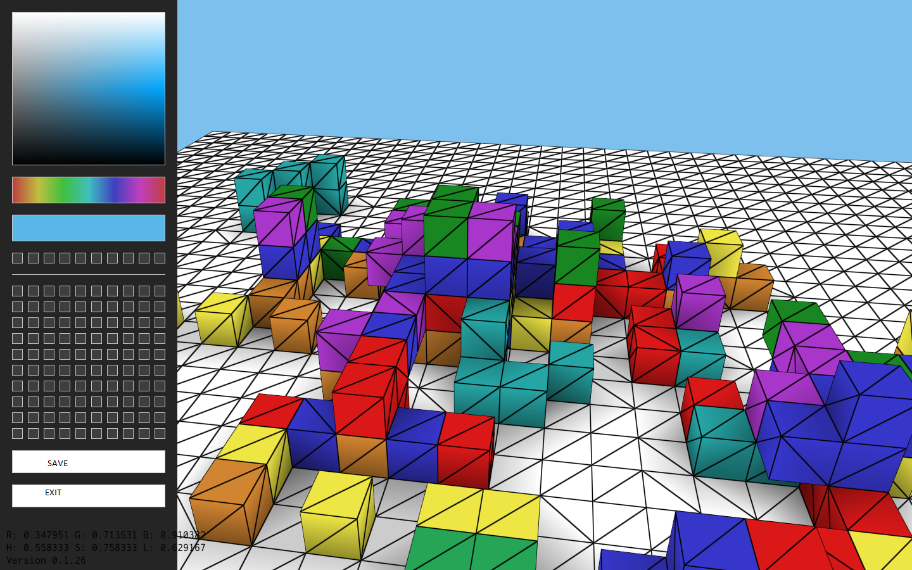
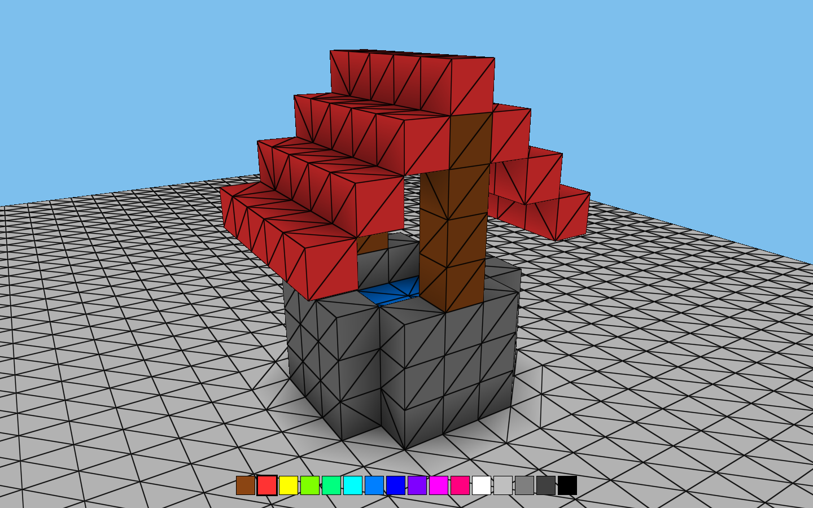
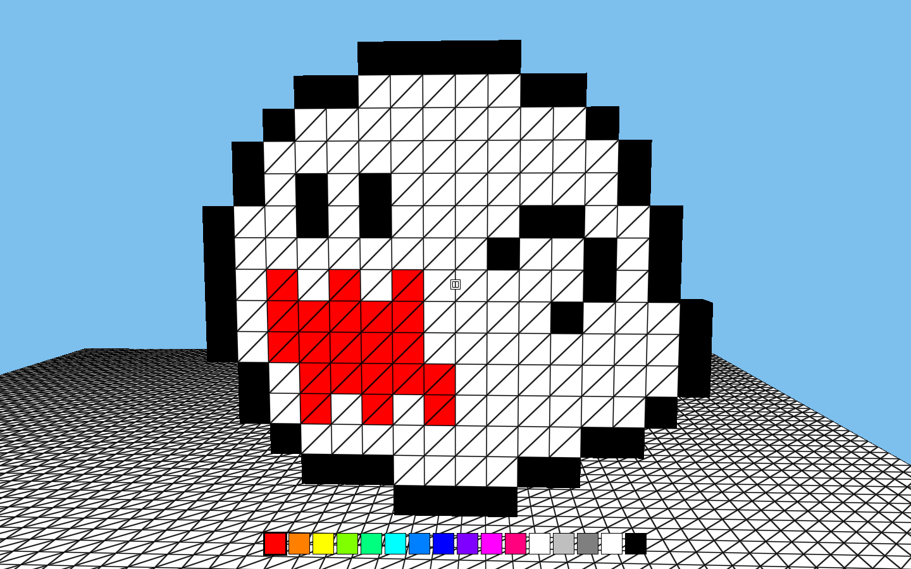
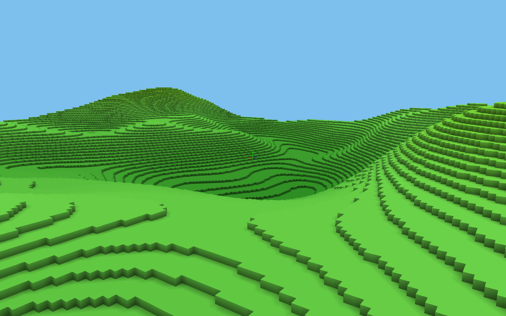

I am experienced with both C and Java and have written code in C#, GLSL, C++, SQL, and Javascript. I have created applications for Windows, Linux, and Android devices as well as for the web. I have used Amazon Web Services and Google Compute Engine to run Linux servers used for databases, web applications, and games. My passion for computer graphics and games has given me experience with object oriented design, data oriented design, measuring and improving code performance, and strong logical thinking and problem solving abilities.
LibDCPU16
LibDCPU16 is a C library for emulating the 16 bit DCPU-16 processor. An interractive emulator is available at http://andrewkersten.com/demu/. The emulator is powered by LibDCPU16, which has been compiled into a WebAssembly module to run in the browser. A bit about the library:
Voxel Editor
Voxel Editor was created to be intuitive for an average gamer to design voxel models in. The editor features a first person camera and intuitive controls. The editor exports models in the .vox format making it compatible with other voxel editors. Additionally the editor can procedurally generate terrain using simplex noise.
|  |  |  |
Stardew Patcher
Stardew Patcher is a C# application that modifies the MSIL bytecode of Stardew Valley to fix several bugs with the 1.03 release. I decompiled the game and used stack dumps to track down and fix several bugs I encountered.
Source code for select projects is available at https://github.com/andrewkersten.